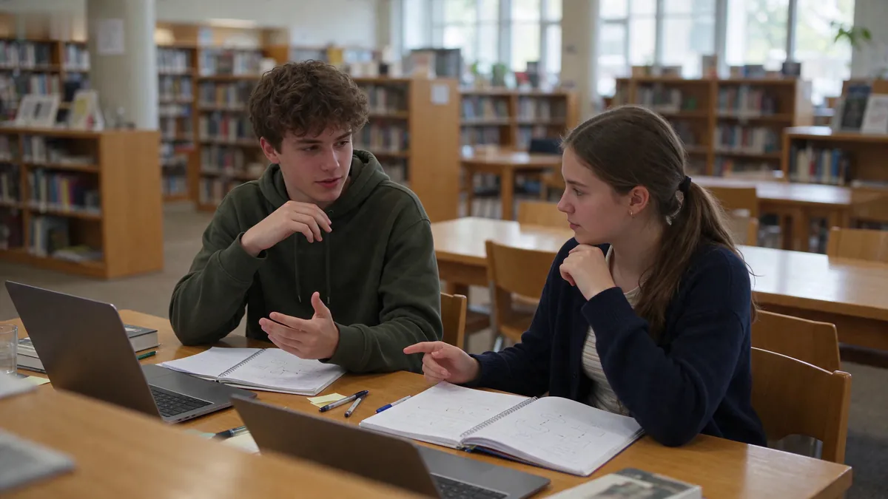
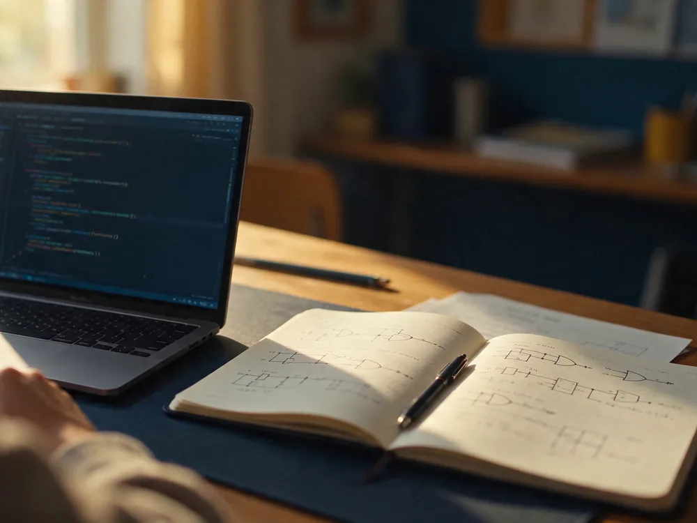
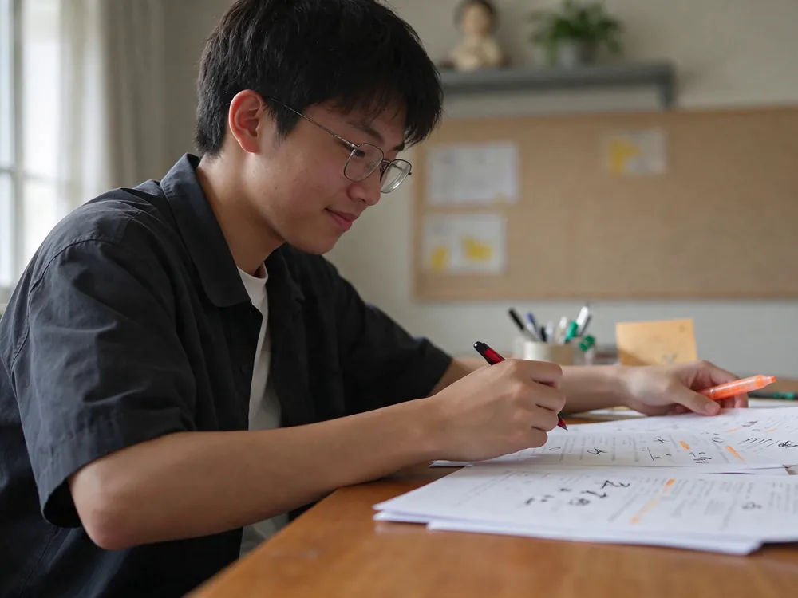

Clear notes on the latest syllabus
Short, exam-focused notes and slides for every topic, written for the current Cambridge syllabuses.
Free notes, slides, worksheets, tests and past-paper practice for Cambridge IGCSE Computer Science 0478 and AS & A Level Computer Science 9618. No sign-up, just pick your level and start.
Everything is grouped by syllabus topic number, so you can find exactly what your class is studying and work through it step by step.
Short, exam-focused notes and slides for every topic, written for the current Cambridge syllabuses.
Worksheets built from real past-paper questions, so you can time yourself like the real exam.
Tests and worksheets come with mark schemes, so you can mark your own work and fix mistakes.
One place for the whole course: theory notes, programming practice, worksheets and past-paper practice, free to read in the on-site reader. Mark schemes for the topic-wise packs are available on request.
Choose your course to see every file for it, sorted by syllabus topic, with search and filters.
Year 10 & Year 11
Theory notes, Boolean logic, algorithms and flowcharts, programming, worksheets and past-paper practice for both IGCSE papers.
27 files 9618Year 12
AS topics 1–12: hardware, processors, system software, security, ethics, databases, algorithms, data types, programming and software development.
22 files
Year 13
A Level topics 13–20 plus a four-week Paper 4 practical programme with exercises, Python starter files and worked answers.
37 filesA simple routine that works for every topic. Repeat it until the mark scheme agrees with you.
Read the notes for one topic and write your own one-page summary.
Do the worksheet or past-paper questions without looking at the answers.
Mark your work with the mark scheme and redo anything you got wrong.
Try a past-paper practice set a few weeks before the exam.
Big revision resources that are worth starting early.
Four weeks of A Level programming practice with notes, real exercises, Python starter files and answers.

Topic 10 notes and practice on logic gates, truth tables and simplifying expressions.

Past-paper worksheets and mark schemes for IGCSE, AS and A Level. Time yourself like the real exam.
Ready to start?
Pick your level, search for the topic you are studying and open the notes. The materials on this site are free to read. For video solutions, marked practice exams and live classes, see the Premium plans.
Short answers about the free materials, the syllabuses, past papers, Premium and how to get in touch.
Yes. Notes, slides, worksheets and past-paper practice on this site are free to read, with no account or sign-up. They open in the on-site reader. Matching mark schemes for the topic-wise past-paper packs are available on request by WhatsApp or email. Optional Premium extras, such as video solutions and live classes, are priced separately — ask on WhatsApp or by email.
Computer Science By Grace.CS covers Cambridge IGCSE Computer Science 0478 and Cambridge International AS & A Level Computer Science 9618, grouped by official syllabus topic.
Yes. Topic-wise past-paper question packs and Paper 4 practice open in the on-site reader (watermarked page images, view-only — they cannot be downloaded). Past-paper questions are © Cambridge University Press & Assessment (UCLES) and are included for revision practice only. Matching official mark schemes are available on request by WhatsApp or email; prices are not listed on the site. This site is not affiliated with Cambridge.
Premium plans add worked video solutions, topic quizzes, marked practice exams, a weekly live group class, an exam bootcamp and one-to-one tutoring. The free notes and past-paper practice stay free to read. Prices are not listed on the site; request them on WhatsApp or by email from the Premium page.
Message Computer Science By Grace.CS on WhatsApp at +255760367002 or email grace.josh.cs@gmail.com. For Premium pricing, use the Get pricing buttons on the Premium page — a message will be ready to send.